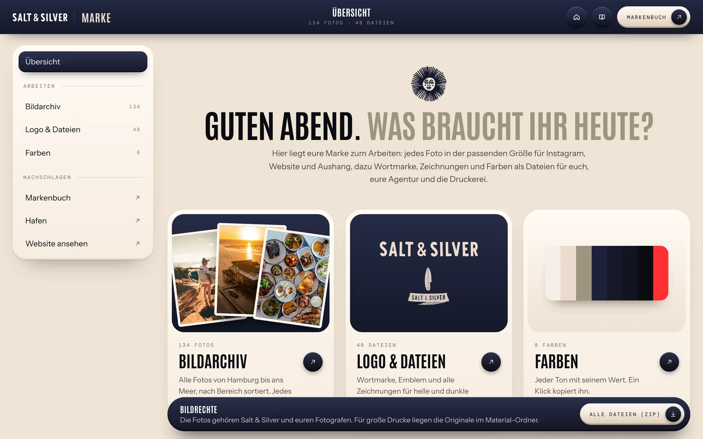
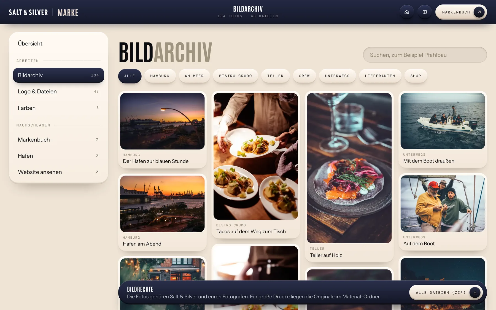
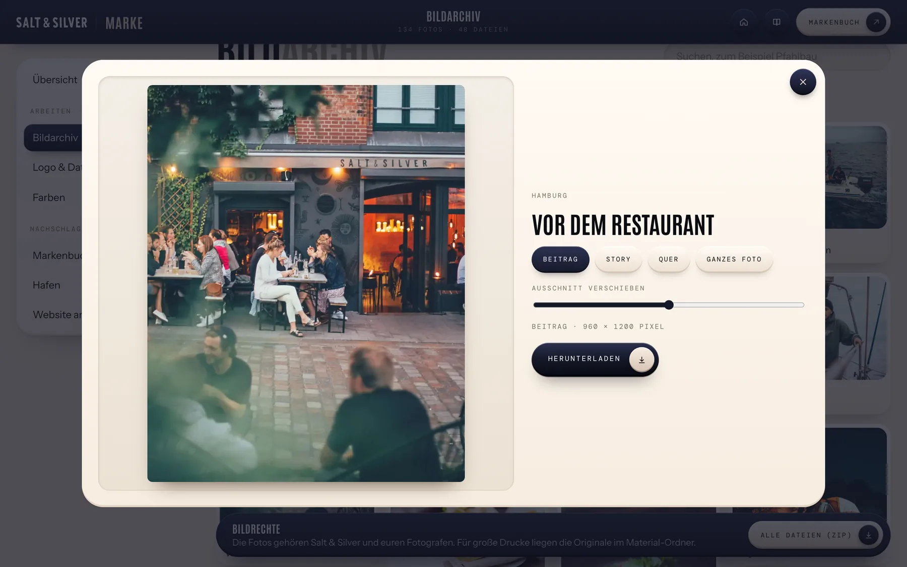
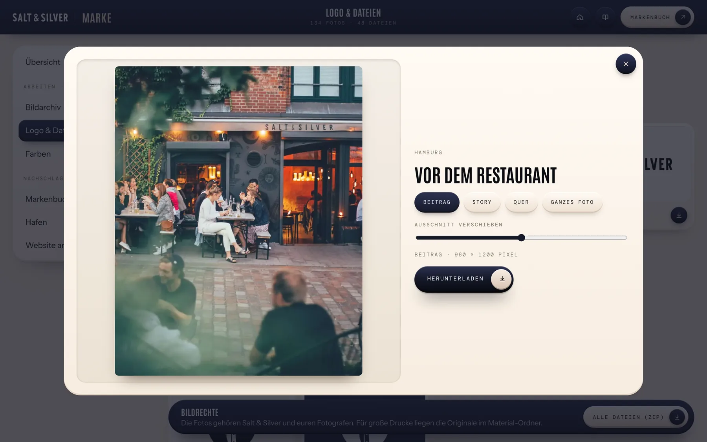
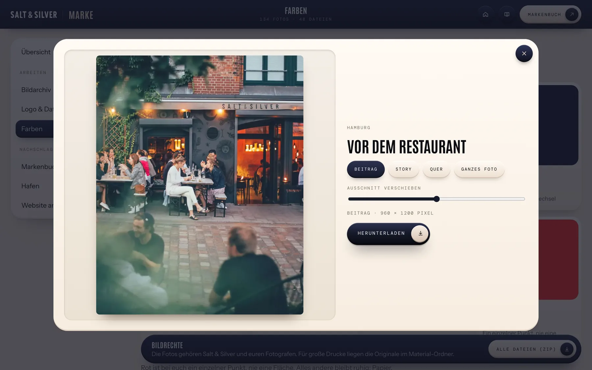

Marke
Der Überblick
Drei Karten führen ins Bildarchiv, zu Logo und Dateien und zu den Farben. Unten liegt das ganze Paket als ZIP.

6 Kapitel
Fotos in der richtigen Größe holen, das Logo weitergeben und im Markenbuch nachschlagen.

Drei Karten führen ins Bildarchiv, zu Logo und Dateien und zu den Farben. Unten liegt das ganze Paket als ZIP.

Im Bildarchiv liegen alle eure Fotos. Oben filtert ihr nach Bereich oder sucht nach einem Wort wie «Pfahlbau».

Ein Klick öffnet das Foto. Wählt das Format: Beitrag, Story, Quer oder das ganze Foto.
Mit dem Schieber rückt ihr den Ausschnitt zurecht. Darunter steht die Größe in Pixeln, «Herunterladen» speichert die Datei.

Unter «Logo & Dateien» liegen Wortmarke, Emblem und alle Zeichnungen für helle und dunkle Flächen. Ein Klick lädt die Datei.
«Alle Dateien (ZIP)» unten lädt alles in einem Paket, zum Beispiel für eine Agentur oder die Druckerei.

Jede Farbe steht mit ihrem Wert da. Ein Klick kopiert ihn in die Zwischenablage.
Das Markenbuch erklärt in acht Kapiteln, wie Wortmarke, Zeichnungen, Farben, Schrift und Bilder zusammengehören.
Die Fotos gehören euch und euren Fotografen. Für große Drucke liegen die Originale im Material-Ordner.